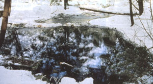

Natural spring water bottlers argue that drilled well water should not be sold as ""spring water"" and that drilling borehole wells can draw contaminated surface water into otherwise pure natural spring aquifiers nearby.